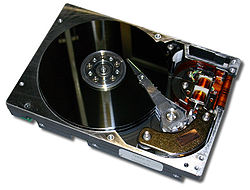
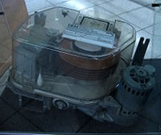
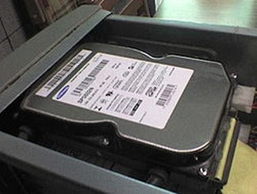
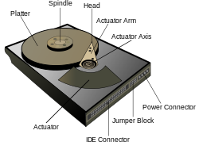

Unidade de Disco Rígido (HD)
Disco rígido ou disco duro, popularmente chamado também de HD (derivação de HDD do inglês hard disk drive), "memória de massa" ou ainda de "memória secundária" é a parte do computador onde são armazenados os dados. O disco rígido é uma memória não-volátil,
ou seja, as informações não são perdidas quando o computador é
desligado, sendo considerado o principal meio de armazenamento de dados
em massa. Por ser uma memória não-volátil, é um sistema necessário para se ter um
meio de executar novamente programas e carregar arquivos contendo os
dados inseridos anteriormente quando ligamos o computador. Nos sistemas operativos mais recentes, ele é também utilizado para expandir a memória RAM, através da gestão de memória virtual. Existem vários tipos de interfaces para discos rígidos diferentes: IDE/ATA, Serial ATA, SCSI, Fibre channel, SAS.

História do Disco Rígido
O primeiro disco rígido foi construído pela IBM em 1956, e foi lançado em 16 de Setembro de 1957. Era formado por 50 discos magnéticos contendo 50 000 setores, sendo que
cada um suportava 100 caracteres alfanuméricos, totalizando uma
capacidade de 5 megabytes, incrível para a época. Este primeiro disco rígido foi chamado de 305 RAMAC (Random Access Method of Accounting and Control) e tinha dimensões de 152,4 centímetros de comprimento, 172,72 centimetros de largura e 73,66 centímetros de altura.
Em 1973 a IBM lançou o modelo 3340 Winchester, com dois pratos de 30 megabytes e tempo de acesso de 30 milissegundos. Assim criou-se o termo 30/30 Winchester (uma referência à espingarda Winchester 30/30), termo muito usado antigamente para designar HDs de qualquer espécie. Ainda no início da década de 1980, os discos rígidos eram muito caros e modelos de 10 megabytes custavam quase 2 mil dólares americanos, enquanto em 2009 compramos modelos de 1.5 terabyte por pouco mais de 100 dólares. Ainda no começo dos anos 80, a mesma IBM fez uso de uma versão pack de discos de 80 megabytes, usado nos sistemas IBM Virtual Machine. Os discos rigidos foram criados originalmente para serem usados em computadores em geral.
Mas no século XXI as aplicações para esse tipo de disco foram expandidas e agora são usados em câmeras filmadoras, ou camcorders nos Estados Unidos; tocadores de música como iPod, MP3 player; PDAs; videogames, e até em celulares. Para exemplos em videogames temos o Xbox360 e o Playstation 3, lançados em 2005 e 2006 respectivamente, com esse diferencial, embora a Microsoft já tivesse lançado seu primeiro Xbox (em 2001) com disco rígido convencional embutido. Já para celular os primeiros a terem essa tecnologia foram os da Nokia e da Samsung. E também devemos lembrar que atualmente o disco rigido não é só
interno, existem também os externos, que possibilitam o transporte de
grandes quantidades de dados entre computadores sem a necessidade de
rede.
Como os dados são gravados e lidos
Os discos magnéticos de um disco rígido são recobertos por uma camada
magnética extremamente fina. Na verdade, quanto mais fina for a camada
de gravação, maior será sua sensibilidade, e consequentemente maior será
a densidade de gravação permitida por ela. Poderemos, então, armazenar
mais dados num disco do mesmo tamanho, criando HDs de maior capacidade.
Os primeiros discos rígidos, assim como os discos usados no início da
década de 80, utilizavam a mesma tecnologia de mídia magnética utilizada
em disquetes, chamada coated media, que além de permitir uma baixa densidade de gravação, não é muito durável. Os discos atuais já utilizam mídia laminada (plated media), uma mídia mais densa, de qualidade muito superior, que permite a enorme capacidade de armazenamento dos discos modernos.
A cabeça de leitura e gravação de um disco rígido funciona como um eletroímã
semelhante aos que estudamos nas aulas de ciências e física do
colegial, sendo composta de uma bobina de fios que envolve um núcleo de
ferro. A diferença é que, num disco rígido, este eletroímã é
extremamente pequeno e preciso, a ponto de ser capaz de gravar trilhas
(pistas em Portugal) medindo menos de um centésimo de milímetro de
largura. Quando estão sendo gravados dados no disco, a cabeça utiliza
seu campo magnético para organizar as moléculas de óxido de ferro
da superfície de gravação, fazendo com que os pólos positivos das
moléculas fiquem alinhados com o pólo negativo da cabeça e,
conseqüentemente, com que os pólos negativos das moléculas fiquem
alinhados com o pólo positivo da cabeça. Usamos, neste caso, a velha lei
"os opostos se atraem". Como a cabeça de leitura e gravação do HD
é um eletroímã, sua polaridade pode ser alternada constantemente. Com o
disco girando continuamente, variando a polaridade da cabeça de
gravação, variamos também a direção dos pólos positivos e negativos das
moléculas da superfície magnética. De acordo com a direção dos pólos,
temos um bit 1 ou 0 (sistema binário).
Para gravar as sequências de bits 1 e 0 que formam os dados, a
polaridade da cabeça magnética é mudada alguns milhões de vezes por
segundo, sempre seguindo ciclos bem determinados. Cada bit é formado no
disco por uma sequência de várias moléculas. Quanto maior for a
densidade do disco, menos moléculas serão usadas para armazenar cada
bit, e teremos um sinal magnético mais fraco. Precisamos, então, de uma
cabeça magnética mais precisa. Quando é preciso ler os dados gravados, a
cabeça de leitura capta o campo magnético gerado pelas moléculas
alinhadas. A variação entre os sinais magnéticos positivos e negativos
gera uma pequena corrente elétrica que caminha através dos fios da
bobina. Quando o sinal chega à placa lógica do HD, ele é interpretado
como uma sequência de bits 1 e 0. Desse jeito, o processo de
armazenamento de dados em discos magnéticos parece ser simples, e
realmente era nos primeiros discos rígidos (como o 305 RAMAC da IBM),
que eram construídos de maneira praticamente artesanal. Apesar de nos
discos modernos terem sido incorporados vários aperfeiçoamentos, o
processo básico continua sendo o mesmo.
 Um antigo disco rígido IBM. |
Interior de um HD onde a cabeça de leitura arranhou o disco. |
Formatação do disco
A formatação de um disco magnético é realizada para que o sistema
operacional seja capaz de gravar e ler dados no disco, criando assim
estruturas que permitam gravar os dados de maneira organizada e
recuperá-los mais tarde.
Existem dois tipos de formatação, chamados de formatação física e
formatação lógica. A formatação física é feita na fábrica ao final do
processo de fabricação, que consiste em dividir o disco virgem em trilhas, setores, cilindros e isolar os bad blocks
(danos no HD). Estas marcações funcionam como as faixas de uma estrada,
permitindo à cabeça de leitura saber em que parte do disco está, e onde
ela deve gravar dados. A formatação física é feita apenas uma vez, e
não pode ser desfeita ou refeita através de software. Porém, para que
este disco possa ser reconhecido e utilizado pelo sistema operacional, é
necessária uma nova formatação, chamada de formatação lógica. Ao
contrário da formatação física, a formatação lógica não altera a
estrutura física do disco rígido, e pode ser desfeita e refeita quantas
vezes for preciso, através do comando Format
do DOS, por exemplo. O processo de formatação é quase automático; basta
executar o programa formatador que é fornecido junto com o sistema
operacional.
Exemplos de sistema de arquivos
Os sistemas de arquivos mais conhecidos são os utilizados pelo Microsoft Windows: ExFAT, NTFS, FAT32 e FAT16. O ExFAT (ou Extended FAT), também conhecido como FAT64 é um formato de sistema de arquivos (pastas)
utilizado principalmente em discos de memória flash ou HDs externos,
introduzido com o Windows Embedded CE 6.0. O FAT32 é uma versão evoluída
do FAT16 introduzida a partir do MS-DOS 4.0. A partir do Windows NT foi introduzido o NTFS, que trouxe novos recursos.
Setor de boot
Quando o computador é ligado, o POST (Power-on Self Test), um pequeno programa gravado em um chip de memória ROM na placa-mãe, que tem a função de “dar a partida”, tentará inicializar o sistema operacional. Independentemente de qual sistema de arquivos se esteja usando, o primeiro setor do disco rígido será reservado para armazenar informações sobre a localização do sistema operacional, que permitem ao BIOS "achá-lo" e iniciar seu carregamento.
Uma
seção transversal da superfície magnética em ação. Neste caso, os dados
binários são codificados utilizando modulação de frequência.
No setor de boot é registrado onde o sistema operacional está instalado, com qual sistema de arquivos
o disco foi formatado e quais arquivos devem ser lidos para inicializar
o computador. Um setor é a menor divisão física do disco, e possui na
grande maioria das vezes 512 Bytes (nos CD-ROMs e derivados é de 2048 Bytes). Um cluster,
também chamado de agrupamento, é a menor parte reconhecida pelo sistema
operacional, e pode ser formado por vários setores. Um arquivo com um
número de bytes maior que o tamanho do cluster, ao ser gravado no disco, é distribuído em vários clusters. Porém, um cluster
não pode pertencer a mais de um arquivo. Um único setor de 512 Bytes
pode parecer pouco, mas é suficiente para armazenar o registro de boot devido ao seu pequeno tamanho. O setor de boot também é conhecido como "trilha MBR", "trilha 0' etc. Como dito, no disco rígido existe um setor chamado Trilha 0, e nele está gravado o (MBR) (Master Boot Record),
que significa "Registro de Inicialização Mestre", um estilo de
formatação, onde são encontradas informações sobre como está dividido o
disco (no sentido lógico)e sobre a ID de cada tabela de partição do disco, que dará o boot. O MBR é lido pelo BIOS, que interpreta a informação e em seguida ocorre o chamado "bootstrap",
"levantar-se pelo cadarço", lê as informações de como funciona o
sistema de arquivos e efetua o carregamento do sistema operacional. O
MBR e a ID da tabela de partição ocupam apenas um setor de uma trilha, o
restante dos setores desta trilha não são ocupados, permanecendo
vazios, servindo como área de proteção do MBR. É nesta mesma área que
alguns vírus (Vírus de Boot) se alojam.
Com a constante demanda por espaço, mais as melhorias da
tecnologia de fabricação, tem havido uma mudança para setores de tamanho
maior, tipicamente para 4096 Bytes. Tal mudança é para que seja melhor
utilizado o espaço do disco para mais informações úteis. Cada setor
precisa(para que os dados sejam confiáveis) de um conjunto de bits
adicionais para verificação contra erros(para que a própria controladora
consiga detectar erros de leitura física), com o aumento de capacidade
dos discos, diminui-se o número de átomos para representar um
determinado bit, que o torna mais frágil, aumentando o risco de perca de
dados. Para não haver problemas por causa dessa fragilidade, aumenta-se
o número de bits para a verificação da integridade da informação no
setor, o que acaba diminuindo o espaço utilizável para os dados do
usuário. Com o aumento para 4096 Bytes, cai, consideravelmente, o número
de bits usado para verificação de integridade em todo o disco, pois
haverá menos setores no disco, e como o mesmo número de bits, por setor,
consegue ser utilizado para uma verificação de uma porção maior de
dados, decai o 'desperdício' por causa da verificação da integridade.
Disquetes, Zip-disks e CD-ROMs
não possuem MBR; no entanto, possuem tabela de partição, no caso do
CD-ROMs e seu descendentes (DVD-ROM, HDDVD-ROM, BD-ROM...) possuem
tabela própria, podendo ser CDFS (Compact Disc File System, norma ISO 9660) ou UDF (Universal Disc Format, uma implementação do padrão ISO/IEC 13346) ou, para maior compatibilidade, os dois; já os cartões de memória Flash e Pen-Drives
possuem tabela de partição e podem ter até mesmo MBR, dependendo de
como formatados. O MBR situa-se no primeiro setor da primeira trilha do
primeiro prato do HD (setor um, trilha zero, face zero, prato zero). O
MBR é constituído pelo bootstrap e pela tabela de partição. O bootstrap é o responsável por analisar a tabela de partição em busca da partição ativa. Em seguida, ele carrega na memória o Setor de Boot da partição. Esta é a função do bootstrap.
Diagrama de um HD para computador.
A tabela de partição contém informações sobre as partições existentes
no disco. São informações como o tamanho da partição, em qual trilha/setor/cilindro
ela começa e termina, qual o sistema de arquivos da partição, se é a
partição ativa; ao todo, são dez campos. Quatro campos para cada
partição possível (por isso, só se pode ter 4 partições primárias, e é
por isso também que foi-se criada a partição estendida...), e dez campos
para identificar cada partição existente. Quando acaba o POST, a
instrução INT 19 do BIOS lê o MBR e o carrega na memória, e é executado o
bootstrap. O bootstrap vasculha a tabela de partição em busca da partição ativa, e em seguida carrega na memória o Setor de Boot dela. A função do Setor de Boot é a de carregar na memória os arquivos de inicialização do sistema operacional. O Setor de Boot fica situado no primeiro setor da partição ativa.
|  Disco rígido instalado em um computador padrão. | Uma seção transversal da superfície magnética em ação. Neste caso, os dados binários são codificados utilizando modulação de frequência. |  Diagrama de um HD para computador. |
Capacidade do Disco Rígido
A capacidade de um disco rígido atualmente disponível no mercado para uso doméstico/comercial varia de 80 a 8000 GB, assim como aqueles disponíveis para empresas e grandes servidores, de mais de 8 TB. O HD evoluiu muito. Os mais antigos e mais simples possuíam 5 MB (aproximadamente 4 disquetes
de 3 1/2 HD), sendo aumentada para 30 MB com a chegada dos sistemas
baseados em processamento de gráficos; em seguida para 500 MB (25 anos
atrás), com a popularização do uso do computador para reprodução de
mídias digitais, tais como fotos de baixa resolução e musicas no formato
mid e wav; e uns 5 anos mais tarde, Hds de 1 à 3 GB, com a alta
popularização do windows 95 e 98. Em seguida, no início dos anos 2000,
lançou-se HDs de 10 à 80 GB, devido a demanda que os novos sistemas
operacionais e todo um novo nicho conectado a internet, necessitava para
compartilhamento e armazenamento de vídeos, jogos, músicas e imagens.
Posteriormente, devido essa crescente demanda por armazenamento e o
desenvolvimento exponencial dessa tecnologia, surgiam no mercado peças
de alta capacidade, contendo vários pratos de dezenas de gigas numa
mesma estrutura. Esses modelos de HD de alta quantidade de armazenamento
se popularizaram bastante, até chegar nos atuais HDs dos mais variados
tamanhos ultrapassando até os incríveis 8 terabytes em modelos topo de
linha.